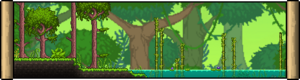

biomas terraria
|
floresta
|
e o bioma inicial, possui poucos mnonstros para enfrentar de dia e pouco perigoso, possui algumas plantas e poucas modificaçoes,
a maioria dos npcs gostam da floresta, possui poucos eventos apenas o da chuva de geleia e o da invasao globin
|
deserto
|
bioma um pouco mais dificil que a floresta pelo seus urubus e larvas, em alguns desertos tem o bioma de oasis onde a sorte ao pescar e muito aumentada
|
neve
|
bioma congelado com muitos monstros baseados nisso, na sua caverna aumenta a chance de minerios e joias
|
bioma maligno
|
pode ser o carmin ou a corrupçao, conhecido como um bioma dificil tem varios inimigos e buracos, dentro dos buracos a cavernas com coraçoes
que ao explodilos com bombas dropam itens muito uteis para o inicio do jogo, e se estourar 3 invoca o boss do bioma seja o cerebro ou o devorador
|
oceano
|
la se encontra o npc pescador, no fundo dos oceanos tem baus com tema de agua
|
inferno
|
e alcançado apos cavar bastante para baixo, tem estruturas com baus de obsidiana e a forja do inferno, contem muitos monstros fortes como demonios e slimes de fogo
se voce jogar o voodo do guia na lava voce invoca o parede de carne
|
cavernas
|
bioma muito comum esta de baixo da terra, pode se modificar a todos os biomas principais la se encontra mineiros, baus, e inimigos unicos
|
espaço
|
no espaço tem bastante construçoes conhecidas como ilhas voadoras, algumas delas possuem casas com baus e minerios no seu terreno e outras sao uma ilha com lago.
no espaço tem bastante monstros como harpias e dragoes, apos matar o guardiao do templo libera mais um monstro conhecido como nave marciana se voce deixar ela te escanear e voltar para o spawn do mapa começa a invasao marciana
|
dungeon
|
voce so libera essa bioma apos matar o skeletron, tem muitos monstros esqueletos e baus de ouro com armas e itens importantes como a murasama e a pistola antiga
|
jungle
|
bioma dificil possui muitos monstros na superficie e no subterraneo e tambem e possivel muito itens como esporos da jungle que e utilizado
para fazer varios itens
|
cogumelo
|
pode ser encontrado no subterraneo ou ser criado na superficie para chamar o npc cogumelo
|
consagrado
|
criado para equilibrar com o bioma maligno, possui fadas, e unicornios.
no seu subterranio spawnam monstros de luz que ao serem derrotados dropam alma da luz
|
modificaçoes de bioma
|
existem muitas modificaçpoes de biomas no terraria como as diferentes cavernas para cada bioma e biomas dentro de outros como a colmeia e o bioma de aranha, outras modificaçoes de biomas
sao as contaminadas pelo bioma maligno que pode aconteçer com qualquer bioma normal menos com o consagrado que tambem pode se espalhar e contaminar outros biomas
|